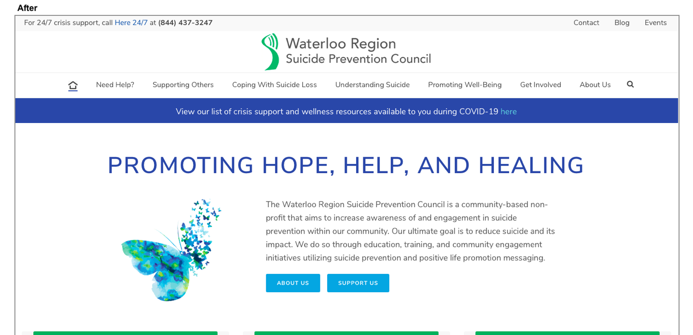
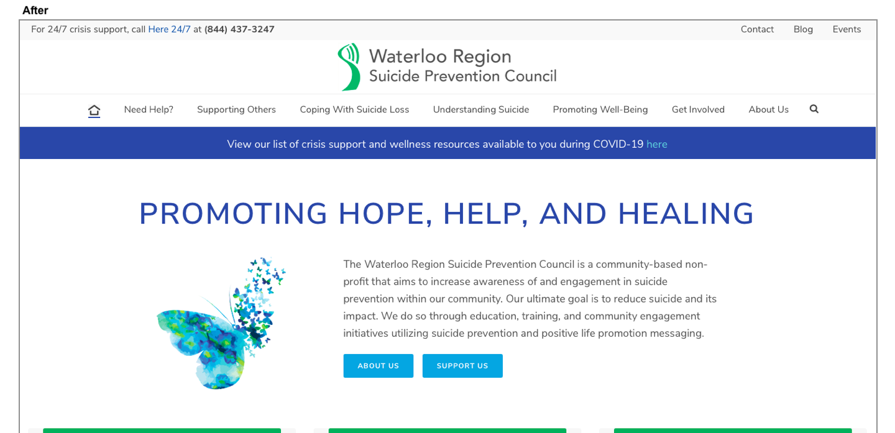

Home
HomeWaterloo Region Suicide Prevention Council
Placement
.png)
About the Partnership
I had first heard about Waterloo Region Suicide Prevention Center from my web design professor who connected fellow students and I to WRSPC's program coordinator. We were tasked with creating blog posts which WRSPC would then post onto their website blog. Near the end of this course, I contacted the program coordinator to inquire about volunteering in order to gain more experience in the field of design. She agreed and we began working together on graphics and other website content. During this time, Wilfrid Laurier University informed UX students about a funding opportunity for those currently volunteering for a non-profit organization. I inquired and was gladly accepted. My position then switched from student volunteer to placement student at WRSPC, and my UX work experience began here!
Goal
WRSPC's goal: To reduce suicide and its impact through education, training, and community engagement initiatives utilizing suicide prevention and positive life promotion messaging.My Goal: To support WRSPC's suicide prevention and life promotion messaging by re-designing the website so that this primary information is easy to find and read, focusing on:
Overall ease of navigation on the website needed to be user-friendly as the visitors were proven to be individuals under stress who are looking for quick and easily accessibly information. Therefore, primary and urgent information needed to be easy to spot, while secondary and other information did not need to be of primary focus. Website design and aesthetics were also important because the website needed to look appealing to not only attract visitors, but to keep them exploring the website to find more important information on suicide.
Software
Wordpress 
Adobe Illustrator 
Initial Research
Initial research was done before user testing to get a look at where the problems within the website were. This allowed us to see where our focus should be and around what website elements to shape user interviews around.
In order to gain a deeper understanding of the website interface, I conducted a Heuristic Evaluation.
In order to gain a deeper understanding of the users that visit the website, I did the following:


User Testing
WRSPC's program coordinator and I created a user research plan outlining our user research methods and expected timeline for user testing and website re-design.
We agreed to proceed with Unmoderated Remote Usability Testing (URUT) and Contextual Inquiry, and only make use of Card Sorting if needed, such as if we did not obtain enough data from the first two methods.
These methods were used to uncover user mental models while navigating through the WRSPC website. The purpose was to essentially allow the users to uncover the main issues within the website since it is them who are using the website.
Unmoderated Remote Usability Testing (URUT)
What is URUT?URUT involves participants who work through a task in their own environment without a moderator present. These tasks are provided to the user via an online platform, which in this case is a survey created with SurkeyMonkey. The participants consisted of the general public within the Kitchener-Waterloo region who were informed of the survey via WRSPC's social media accounts, including Instagram, Facebook, and LinkedIn.
The participants were provided with tasks to complete on WRSPC's website on their own time and explain how hard that task was to complete. These tasks were formed around what WRSPC considered to be the most vital information on their website. For example: Please take the time to find our "Why...? Support Group" page. You can have a look at the full list of tasks. A scale of easy to difficult was provided along with an optional text box where participants could describe why their experience was easy or difficult.
Below is the initial URUT recruitment poster I created and sent to the program coordinator to distribute. View the interactive pdf version of the poster which allow users to easily access the survey by clicking the link at the bottom.

After about two weeks, we were not getting the completion rate expected, so we created a youth survey for high school students, along with a separate adult one. This youth survey was posted on WRSPC's Instagram account with the incentive of one volunteer hour for high school students who fully complete it. Below are both the adult and youth URUT recruitment posters posted on WRSPC's social media accounts, fit to configure to Instagram's square photo dimensions.


Once we had a total of 15 responses, we moved on to the contextual inquiry phase, where we formed our task questions based on the results of URUT. For example, if a task was easy to complete by everyone who took the URUT survey, we identified it as a non-issue and did not include this task in our contextual inquiry sessions.
Contextual Inquiry
What is contextual inquiry?This method involves observing people in their natural context and asking them questions to fill in the gaps of the observation. It provides information about the context of use, which is website usability and navigation in our case. The purpose was to observe how users navigate through the WRSPC website and what process they go through when identifying certain information. Due to the pandemic, we were not able to interview participants in-person, so we conducted them via Microsoft Teams. The participants were chosen to be Lutherwood employees and WRSPC board members; WRSPC's program coordinator communicated with them through email. We conducted 5 contextual inquiry interviews and switched between moderator and note-taker.
You can view the list of tasks.
Website Issues
Some main issues identified by URUT and contextual inquiry:
- There is no clear home button
- One of the main pieces of information WRSPC wanted users to find is their Why...? Support Group; this page was not easily found
- Suicide resource pages are difficult to find
- There is an overwhelming amount of information on the website at first glance
- A lot of content under each menu tab
Solutions
Some main solutions identified based on issues found:
- Add home button.
- Make Why...? Support Group page more visible to users
- Hyperlinks leading to suicide resource pages were added on other appropriate pages within the website
- Lighten the amount of information on the home page, delete repetition on the website, and focus on making only the most important information obvious
- Reorganize and delete unnecessary items within main menu tabs
Redesign
The re-design was done purely with user needs in mind. Specifically, users visiting the WRSPC website need quick information on suicide, which varies from advice to urgent help. After analyzing the results from the URUT survey and the contextual inquiry interviews, we needed to re-structure certain content in a way that would benefit the users and WRSPC. Users needed quick and easy information and WRSPC needed users to find the most important information on their website. A big focus here was information architecture; how can we structure the website content in a clear and understandable way that allows users to find what they need with less effort? Moving, editing, and deleting content was a long process with the re-design. Below, you can view some aesthetic changes to the home page, a re-designed graphic, and a list of all the tasks I completed during the re-design.
Home page
Added and changed features:
- Added home page icon button for easy home page access
- Re-designed the COVID-19 banner for better visibility
- Darkened text for increased visibility
- Darkened buttons for better white text visibility
- "Life Promotion" menu tab title changed to "Promoting Well-Being" for better understanding
- Unappealing post thumbnails removed and live Instagram feed added for updated posts
 



Why...? Support Group page
On this page, I re-designed the graphic so that it is higher quality and more appealing. Aside from this, I left the page content as it was, reorganizing some text. In addition, I created an interactive PDF version of this graphic that individuals can easily share, encouraging more traffic to this important page. In addition to this, I added l
The below image displays the before. Hover over the image on desktop or click on image on mobile to see the after.
Additional Changes
The main menu was another issue during user testing. Users claimed that there was too much unnecessary information under the tabs which could be merged into less pages. After an analysis by the program coordinator and I, we made changes to the menu that allowed it to be cleaner when users looked under each tab. We also merged pages that had similar content onto one page.
In addition, I completed a list of tasks. It took me about one month to complete everything. In the meantime, I was having weekly meetings with the program coordinator to update her on my progress, ask questions, and ask for input.
Summary
This three-month long project allowed me to really see how it is to work in the UX field. I enhanced my UX skills in so many different areas, including research and ethics, user testing, graphic design, and web design. In addition, switching between being the moderator and the note-taker of five contextual inquiry interviews allowed me to see how it is to interact with participants. The thematic analysis of the contextual inquiry notes gave me a look at how much work goes into research and user testing.
WRSPC benefited from my work as they now have a more refined website in terms of navigation and overall design. If I had more time, I would have been able to take the re-design to another level, giving the website an entirely different design. However, I feel that I completed a lot of work within my one month design window. Because time was not enough, I compiled a list of next steps which WRSPC could chose to pursue or not; you can view this list.